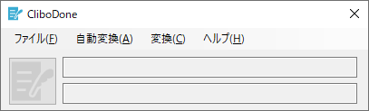
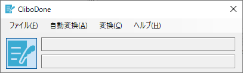

CliboDoneのマニュアル
CliboDoneは、クリップボードの内容を監視して都度内容を自動変換するソフトウェアです。
『Clipboardを何かしら変換する(Done)する』という意味合いで、CliboDoneという名前にしました。
CliboDoneの仕組み
本ソフトウェアではクリップボードの内容を監視します。
クリップボードの内容が更新されると、事前に設定されているスクリプトファイルが実行されて
スクリプトの変換プログラムに従い文字列が加工されます。
実行イメージ
インストール方法
CliboDone.zipを展開すると、以下のようなファイルが作成されます。
どこか適当なフォルダにファイルを保存すればインストール完了です。
| ファイルパス （主要なファイルのみ記載） |
説明 |
|---|---|
| CliboDone | |
| + CliboDone.exe | 実行ファイルの本体 |
| + Manual | マニュアルフォルダ |
| + Manual.html | マニュアルHTML |
| + ConvertScripts | 変換用スクリプトファイルを管理するフォルダ |
| + 01.Simple | |
| + ToLower_Script.vbs | 小文字変換スクリプトファイル |
| + ToUpper_Script.vbs | 大文字変換スクリプトファイル |
| + 02.Program | |
| + ToCamel_Script.vbs | キャメルケース変換スクリプトファイル |
| + ToCamelUpper_Script.vbs | キャメルケース変換（先頭大文字）スクリプトファイル |
| + ToKebab_Script.vbs | ケバブケース変換スクリプトファイル |
| + ToKebabUpper_Script.vbs | ケバブケース変換（全て大文字）スクリプトファイル |
| + ToSnake_Script.vbs | スネークケース変換スクリプトファイル |
| + ToSnakeUpper_Script.vbs | スネークケース変換（全て大文字）スクリプトファイル |
| + (Template)Script.vbs | テンプレート用スクリプトファイル |
| + (Template)Template.txt | テンプレート用テンプレートファイル |
| + Example_Script.vbs | サンプル用スクリプトファイル |
| + Example_Template.txt | サンプル用テンプレートファイル |
操作方法
アプリの実行
フォルダを開いて、CliboDone.exeを実行してください。
アプリの表示
実行すると、ウィンドウが開かれます。

ファイルメニューは以下のようになっています。
またタスクトレイにアイコンが表示されます（一番左端のアイコン）。
アイコンを右クリックすることで、メニューが表示されます。

変換のアクティブ化
ウィンドウで左端のイメージアイコンを押すことで、変換処理をアクティブな状態にできます。
左が非アクティブな状態（アイコンが灰色）。右がアクティブな状態（アイコンが青色）。

アクティブな状態でなければ、変換処理が働かないので注意してください。
変換スクリプトの指定と実行
変換スクリプトを指定するには、メニューの変換を押して、何か適当な項目を選択します。ここでは、01.Simple\ToLowerを選択しました。
この状態でテキストエディタなどを開いてコピーを実行すると、ウィンドウの下部のテキストに変換した旨のメッセージが表示されます。
ToLowerはクリップボード中のアルファベットを全て小文字にするので、この状態で貼り付けを実行すると内容が変換されていることがわかります。
例として、"HELLO WORLD"をコピー後、貼り付けを実行すると、"hello world"に変換されていることがわかります。
変換スクリプトのカスタマイズ
新しいファイルの作成
変換スクリプトを新しく作成するには、メニューのファイルを押して、『変換スクリプトファイルを作成する』を押します。
すると、新たにファイルが作成されますので、続けて『変換スクリプトフォルダをエクスプローラで開く』を押してエクスプローラを開き該当ファイルをエディタで編集してください。
→
また、ファイルの階層は2階層目まで有効です。新たにフォルダを作成して、その中にファイルを移動することも可能です。
ファイルの仕様について
変換スクリプトは以下の2ファイルで1セットです。但し、その内の [ファイル名]_Template.txt は無くても構いません。
"[ファイル名]"の部分は自由に名前が変更できます。但し、"[ファイル名]"より右側の部分（アンダーバーや固定的な文字・拡張子など）は元の名前から変更しないでください。
変更されるとアプリから正しく読み取りができなくなります。
- [ファイル名]_Script.vbs
- [ファイル名]_Template.txt
ファイルの説明
Example_Script.vbsとExample_Template.txtを例にファイルの内容を説明します。
Script.vbsは、決められた関数名と引数・戻り値で構成されています。
関数名は『Main』で、引数は『scriptDirPath』・『clipboardContents』・『templateContents』です。
戻り値は、変換結果の内容を返却します。
『scriptDirPath』には、スクリプトファイルのディレクトリパスが受け渡されます。
『templateContents』には、Example_Template.txt から読み込まれた内容が受け渡されます。
『clipboardContents』には、クリップボードの内容が受け渡されます。
Example_Script.vbsの内容
Option Explicit
' ==============================================================================
' Main entry point.
'
' Args : scriptDirPath ... Own script directory path.
' : clipboardContents ... Clipboard contents.
' : templateContents ... The contents of the Template.txt file.
' Return : Result of conversion.
' ==============================================================================
Function Main(scriptDirPath, clipboardContents, templateContents)
' Return variable
Dim ret
' Replace with contents variable in template string.
If Not IsEmpty(templateContents) Then
ret = Replace(templateContents, "${clipboardContents}", clipboardContents)
Else
ret = clipboardContents
End If
' Return
Main = ret
End Function
上記のVBSソースでは、引数の『templateContents』にExample_Template.txt（以下の内容）が引き渡されます。
そちらの文字列内の "${clipboardContents}" をクリップボードの内容で置き換えることで、接頭辞と接尾辞を付与しているというサンプルソースになります。
Example_Template.txtの内容
-------------------------------------------------------------------------------- Prefix
${clipboardContents}
-------------------------------------------------------------------------------- Suffix
著作権および免責事項
本ソフトウェアはフリーソフトです。自由にご使用ください。なお，著作権は作者である Ison が保有しています。
本ソフトウェアを使用したことによって生じたすべての障害・損害・不具合等に関しましては
私、私の関係者および私の所属するいかなる団体・組織とも、一切の責任を負いませんのでご了承頂き、各自の責任においてご使用ください。